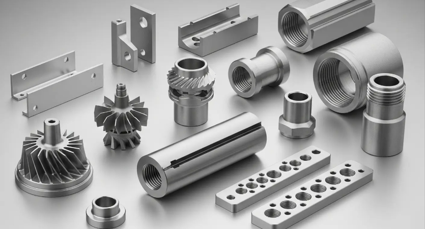
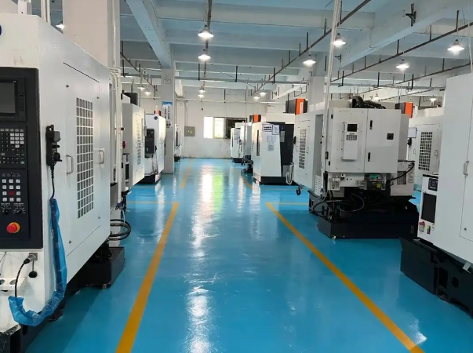

Nov 16, 2026 · 7 min read · by TrueMid Manufacturing
A 12-hour CNC quote is realistic when the package is complete. The delay usually is not the shop's queue — it is a missing material, no quantity, or a 3D file that cannot be measured. This is the file set we can review the same day, plus the notes that keep the quote accurate.

Send these with the first message. If one item is still undecided, say so — "undecided" is more useful than leaving it blank.
| Include | Why it matters |
|---|---|
| 3D model in STEP (or IGES / native CAD) | We can measure features, check tool access, and price machining time |
| Quantity, even if it is "1 now, maybe 20 later" | Setup cost is spread across the batch; one piece and twenty pieces are different quotes |
| Material, or a close equivalent | 6061-T6, 304, 316L, brass, and POM do not machine or finish the same way |
| What the part has to do | A fit-check prototype and a load-bearing bracket should not be quoted the same |
| PDF drawing, if you have one | Threads, finishes, and critical tolerances are easier to read on a 2D sheet |
Nice to have, but not required for a first pass: surface finish (as-machined, bead blast, anodize), a need-by date, and any feature you already know is tight or awkward.
Upload the files on our CNC machining page, or email them to bruce@truemidmanufacturing.com. We return a free DFM review and quote within 12 hours. Typical production and worldwide delivery is 5–14 days.
For CNC prototype machining, STEP (.step / .stp) is the file we want first. It keeps real dimensions, holes, and faces. IGES and native SolidWorks, Fusion 360, or Inventor files are fine too.
Do not send only an STL for a machined part. STL is a surface mesh made for 3D printing. It drops the precise diameters and flatness a mill needs, so we spend the first hour reconstructing geometry — or we have to ask you for a better file, which burns the 12-hour window.
A screenshot or a phone photo of the part is useful context, not a substitute for the model.
If you have a PDF drawing, send it with the STEP file. The model shows the shape; the drawing should show the intent:
If you do not have a drawing yet, still send the STEP file. We can quote from the model and flag the dimensions that need a callout.
A short note next to the files is enough. These five lines prevent most back-and-forth:
If the part is aluminum and the geometry is straightforward, that package is usually enough to quote without another question.
These are the gaps we see most often on otherwise good RFQs:
None of these means the job is a bad fit. They just turn a same-day quote into a round of clarification.
On a complete package, you get two things, at no charge and with no obligation:
If something in the file is unclear, we will ask a focused question instead of padding the price to cover the unknown.

Upload a STEP or PDF on our quote form, or email bruce@truemidmanufacturing.com. WhatsApp is also fine: +86 152-9186-1855. Include the checklist above, and we will return a free DFM review and quote within 12 hours.
Free DFM review, process recommendation, and detailed quote within 12 hours.
Request a Quote →